Integrated Planning Workbench
中英双语 animated SVG · 9 秒工作流循环
README HERO / ASSET PREVIEW


所有曲线与矩阵均为流程示意，不代表实际销量、模型精度或服务水平。另附 静态 SVG，供不播放 SVG 动画的查看器使用。
中英双语 animated SVG · 9 秒工作流循环
README HERO / ASSET PREVIEW

所有曲线与矩阵均为流程示意，不代表实际销量、模型精度或服务水平。另附 静态 SVG，供不播放 SVG 动画的查看器使用。